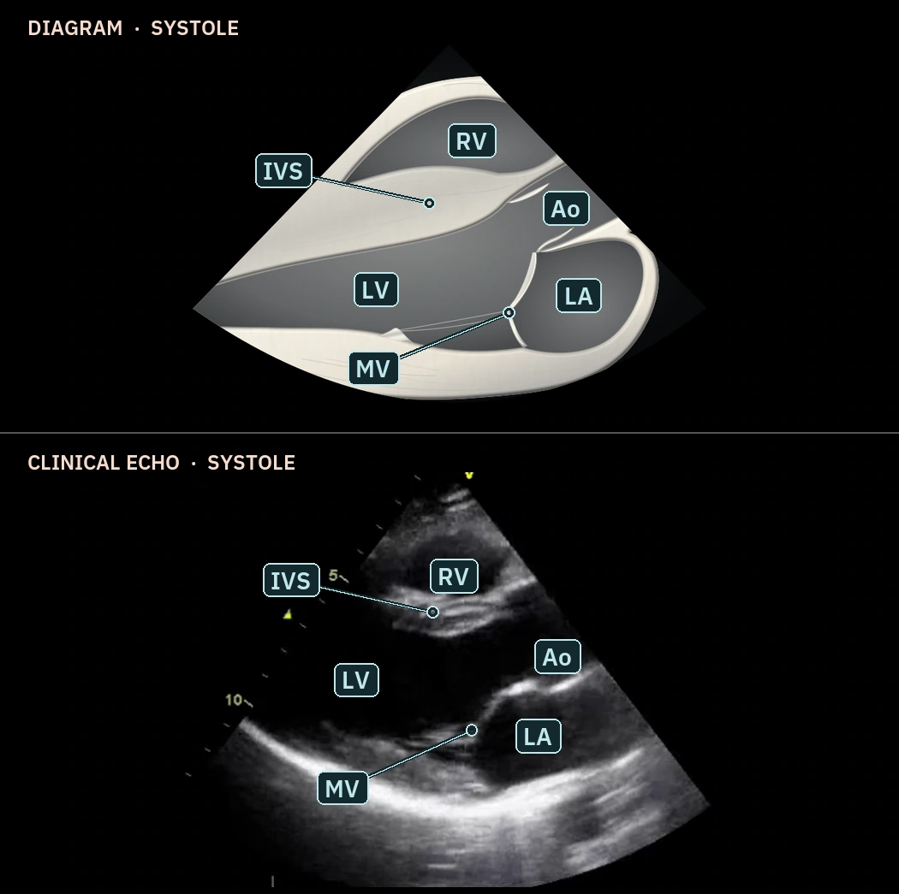
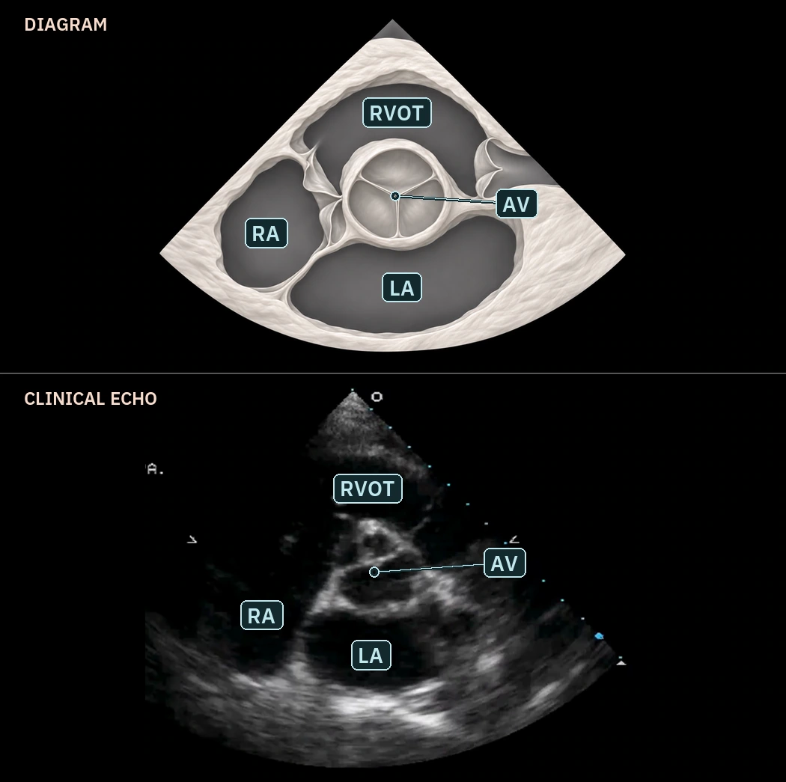
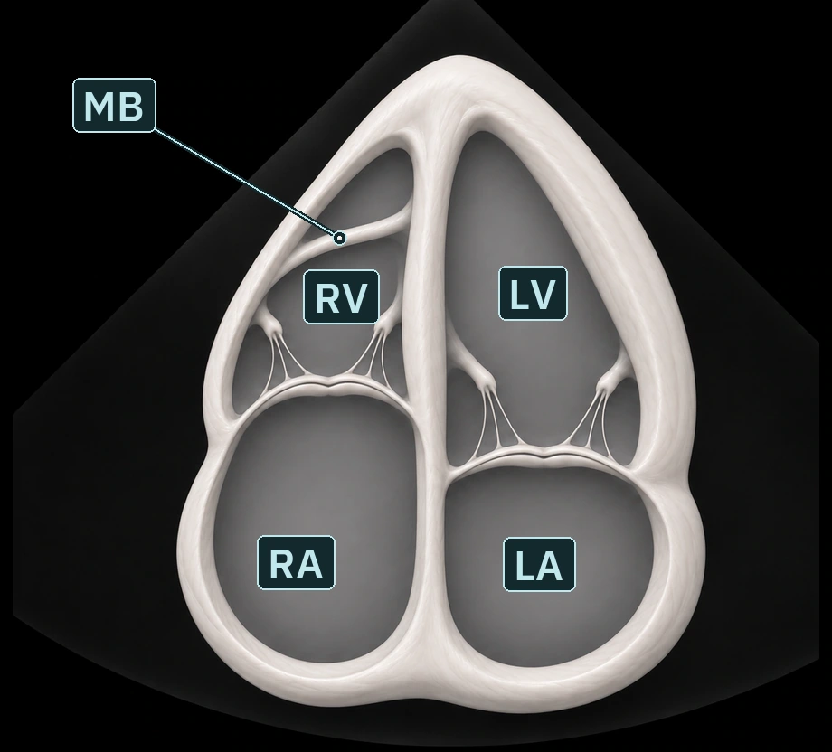
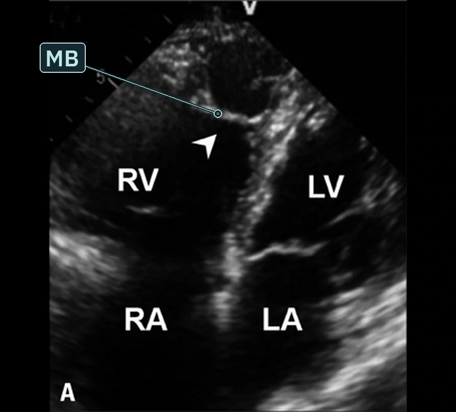
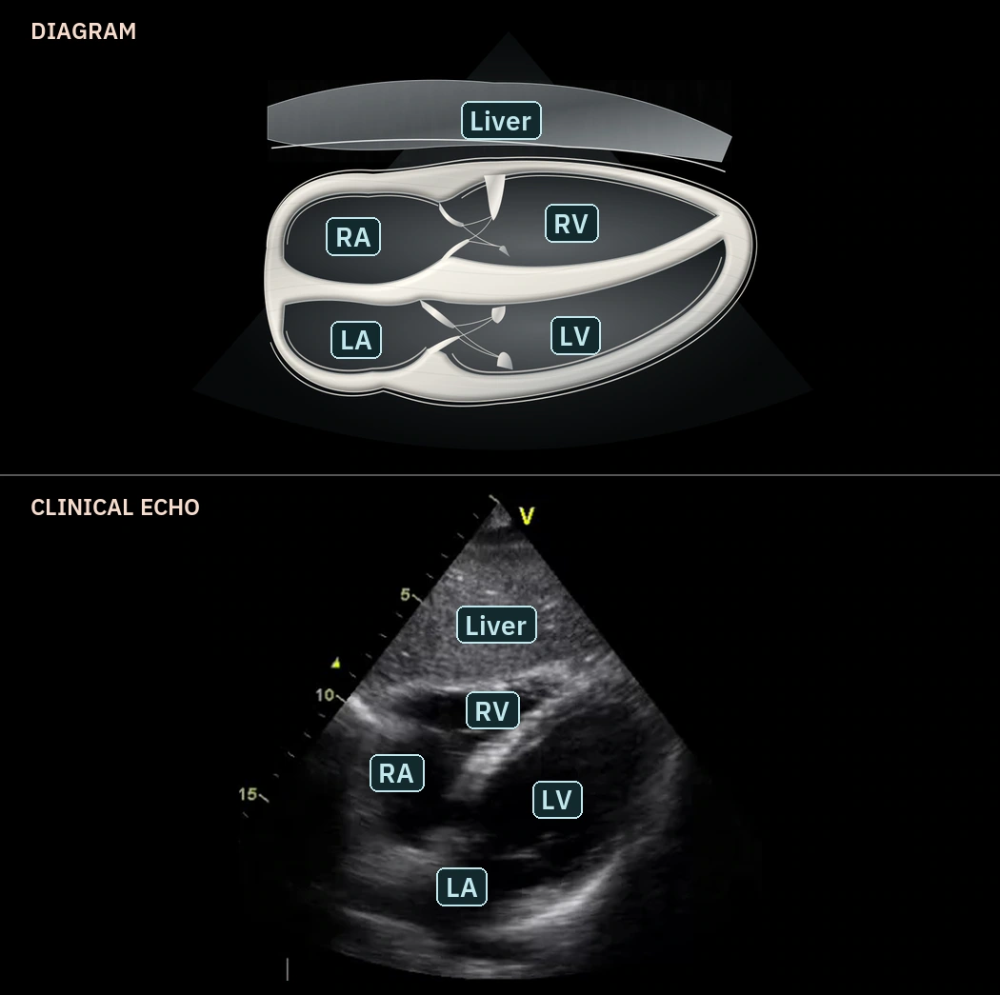
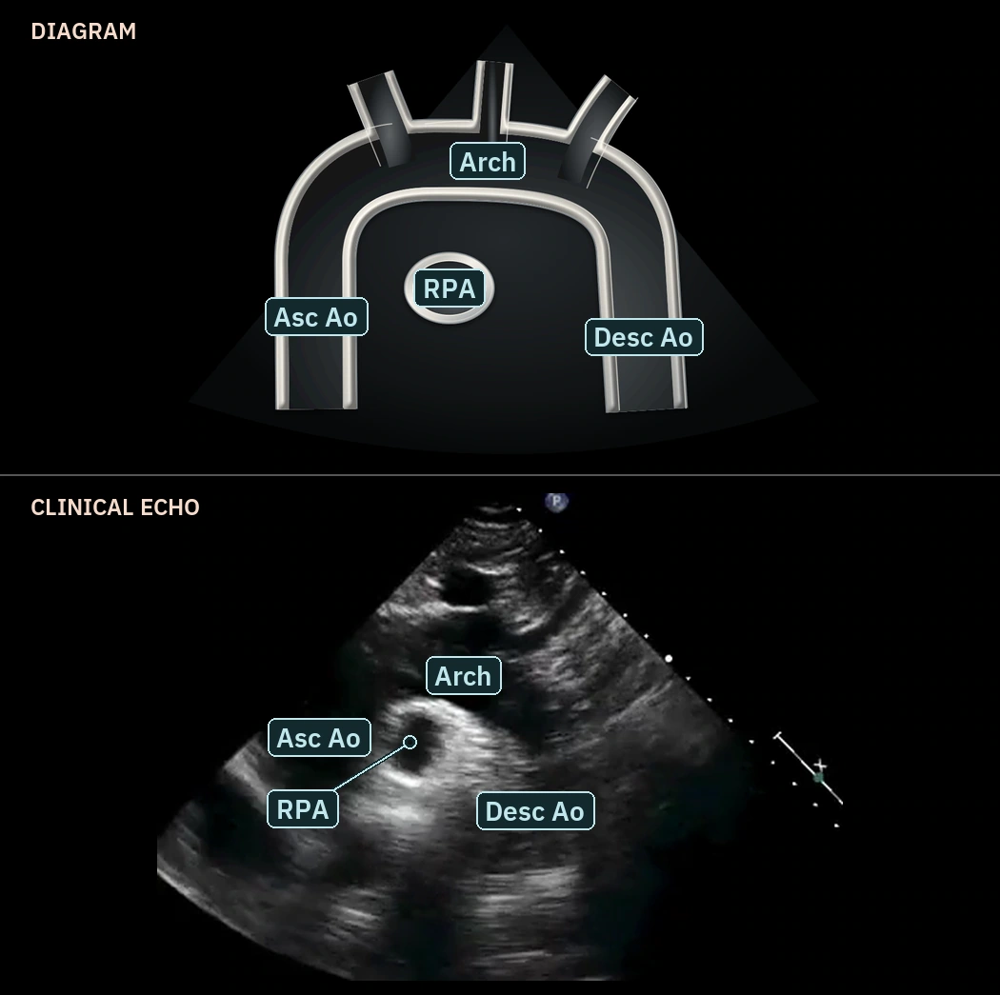
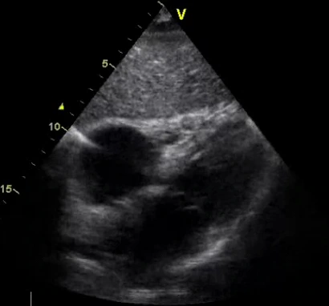

The diagram and echo frame show systole. The left ventricle is seen along its long axis. The left atrium lies behind the aortic root, and the mitral valve is closed between the left atrium and ventricle.
What to watch in the loop
Start with the mitral valve closed. Watch its two leaflets move apart in diastole and come together again in systole.
Diagram and labeled echo frame

RV
Right ventricle (portion in view)
LV
Left ventricle
LA
Left atrium
Ao
Aortic root
MV
Mitral valve
IVS
Interventricular septum
From the left atrium to the aorta
Find both mitral leaflets
In diastole, the anterior leaflet moves toward the interventricular septum and the posterior leaflet toward the posterior wall of the left ventricle. Blood flows between them from the left atrium into the ventricle.
Find the pericardium
Follow the posterior wall of the left ventricle away from the probe. The pericardium appears as a bright line just beyond the myocardium.
This short-axis section passes through the aortic valve. The aortic root is seen in cross-section. The right ventricular outflow tract curves around it anteriorly, and the left atrium sits behind it.
What to watch in the loop
Find the aortic valve in the center. Follow it for several beats as its cusps close in diastole and open in systole.
Diagram and labeled echo frame

AV
Aortic valve
RVOT
Right ventricular outflow tract
RA
Right atrium
LA
Left atrium
The three aortic valve cusps
Two phases from the same loop
Find the central point where all three cusps meet in diastole. In early systole their edges separate, leaving a dark opening at the same spot.
Use the surrounding structures
The right coronary cusp lies next to the right ventricular outflow tract. The noncoronary cusp lies next to the interatrial septum.
The apex is nearest the probe, with the atria deeper in the image. Look inside the right ventricle for the moderator band, a muscular band arising from the interventricular septum.
What to watch in the loop
Pause with both atrioventricular valves closed. Find their septal attachment points and compare their levels on the same frame.
Four chambers and the moderator band
Diagram

Clinical echo · separate still image

MB
Moderator band
RV
Right ventricle
LV
Left ventricle
RA
Right atrium
LA
Left atrium
Compare the valve insertion levels
Find the septal attachments
The tricuspid valve lies between the right atrium and ventricle, and the mitral valve between the left atrium and ventricle. The tricuspid valve inserts closer to the apex. Dashed lines mark the two levels on the echo frame.
Trace both septa
The interventricular septum separates the ventricles, and the interatrial septum separates the atria. Follow both toward the center of the heart.
The ultrasound beam first passes through the liver. The right ventricle is the cardiac chamber closest to the probe.
What to watch in the loop
Find the right ventricle just beneath the liver and the left ventricle deeper in the image. Then look toward the atria and follow the leaflets as the valves open and close.
Diagram and labeled echo frame

RV
Right ventricle
LV
Left ventricle
RA
Right atrium
LA
Left atrium
Valves and septa
Find the center of the heart
The tricuspid valve lies between the right atrium and right ventricle. The mitral valve lies between the left atrium and left ventricle.
Trace the interatrial septum
Find the tissue between the atria and follow it to the center of the heart. From this window, the ultrasound beam crosses the septum at nearly a right angle.
From the suprasternal notch, the aortic arch is seen along its long axis. The right pulmonary artery appears in cross-section beneath it.
What to watch in the loop
Trace the ascending aorta around the arch to the start of the descending thoracic aorta. Look beneath the curve for the right pulmonary artery in cross-section.
Diagram and labeled echo frame

Asc Ao
Ascending aorta
Arch
Aortic arch
Desc Ao
Descending thoracic aorta
RPA
Right pulmonary artery
The three aortic arch branches
Follow the branches in order
Trace the arch from the ascending to the descending aorta. In the usual branching pattern, the brachiocephalic artery comes first, followed by the left common carotid artery and then the left subclavian artery.
Match the branch origins
A separate clinical image shows the origins of all three vessels. Match the original BCA, LCCA and LSA labels to the diagram and the key.
Five clinical loops, 30 questions. Identify structures 1, 2 and 3 on each still. Play the loops to follow the valves in motion. After each case, check your answers and read the explanation. This browser saves your answers.
When acquiring this view, include the true apex. An imaging plane that misses it makes the left ventricle appear shorter.
Show answer
Apical four-chamber view
The apex is at the top and both atria are at the bottom. The left ventricle is on the right of this image. The mitral valve lies between the left atrium and the left ventricle.
When the mitral valve opens, blood flows from the left atrium into the left ventricle and the ventricular cavity enlarges. At the septum, the tricuspid valve normally inserts slightly closer to the apex than the mitral valve.
M. L. de Alcantara et al., Brazilian Society of Cardiology, 2026. Supplement 2, video 03. Still extracted and cropped.
Source
· CC BY 4.0
Case B
Watch the loop
Hint
Tilt the probe slightly until the free edges of the cusps are visible together in one cross-section.
Show answer
Parasternal short-axis view at the aortic valve
The aortic root is shown in cross-section. The aortic valve is in the center, with the left atrium behind it. Count the cusps as they open in systole.
The right ventricular outflow tract runs in front of the aortic root and carries blood into the main pulmonary artery. In diastole, the three lines where the closed cusps meet normally form a Y in the center of the valve.
Atif Qasim, Echocardiographer.org. Still extracted from the loop and cropped.
Source
· Author’s terms
Case C
Watch the loop
Hint
Align the imaging plane with the long axis of the left ventricle. The true apex is usually outside the field of view.
Show answer
Parasternal long-axis view
The left ventricle is seen along its long axis. The left atrium lies behind the aortic root. The mitral valve lies between the left atrium and the left ventricle.
Label 3 points to the wall between the ventricles. In early diastole, the tip of the anterior mitral leaflet moves toward this septum.
I. A. C. van der Bilt (Vdbilt), CardioNetworks / ECHOpedia, AMC Echocardiography Department. Still extracted and cropped.
Source
· CC BY-SA 3.0
Case D

Watch the loop
Hint
Compare this with the apical view. Where does the cardiac apex point on this screen?
Show answer
Subcostal four-chamber view
The tissue in front of the heart is the liver. The right ventricle lies between the liver and the left ventricle. The apex points to the right of this image.
The interatrial septum separates the right and left atria. Follow it to the junction of the septa and the atrioventricular valves.
Label 3 is in the right atrium. From there, follow the flow through the tricuspid valve into the right ventricle next to the liver.
I. A. C. van der Bilt (Vdbilt), CardioNetworks / ECHOpedia, AMC Echocardiography Department. Still extracted and cropped.
Source
· CC BY-SA 3.0
Case E
Watch the loop
Hint
Tilt the probe slightly to follow the origins of the arch branches.
Show answer
Suprasternal aortic arch view
The ascending aorta continues into the arch and then into the descending aorta. Beneath the arch, the right pulmonary artery is seen in cross-section.
In the usual branching pattern, the brachiocephalic trunk arises first, followed by the left common carotid artery and then the left subclavian artery.
Start at label 3 and follow the curve toward label 1 to trace the ascending aorta into the arch. The round lumen beneath the arch shows the right pulmonary artery in cross-section.
Long-axis, apical four-chamber and subcostal views
The cine loops by I. A. C. van der Bilt (CardioNetworks / ECHOpedia, AMC) were cropped and re-encoded. Labels were added to the still frames. The loops are licensed under CC BY-SA 3.0. The separate moderator band image is adapted from Figure 6A in M. J. Kim and H. O. Jung (2013). The panel was cropped and a label was added. The image is licensed under CC BY-NC 3.0.
Atif Qasim, MD, MSCE, Echocardiographer.org. The overview and the close-up of the aortic valve come from separate recordings. Excerpts and stills were selected, cropped and annotated. The author permits reuse with attribution.
Atif Qasim, MD, MSCE, Echocardiographer.org. An excerpt from the longitudinal view of the aortic arch was cropped, and labels were added to the still frame.
L. Corbett and colleagues, British Society of Echocardiography, 2022. The echocardiogram is from Table 1 on page 27. The original BCA, LCCA and LSA labels are retained and explained in the diagram and key.
Monica Luiza de Alcantara and colleagues, Brazilian Society of Cardiology, 2026. Supplement 2, Video 03. The still and the cine loop come from the same examination. The excerpt was cropped and re-encoded, and the audio was removed.